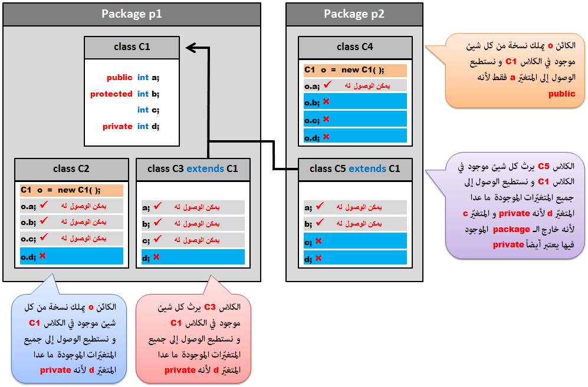

Javaالـ Modifiers في جافا
مفهوم الـ Modifiers
الـ Modifiers هم كلمات يمكنك إضافتهم عند تعريف أشياء جديدة ( سواء كلاس, متغير, دالة إلخ.. ) لتحديد طريقة الوصول إليها.
ستحتاجهم في الغالب إن كنت تعمل في برنامج كبير ضمن فريق من المبرمجين.
فإذا كنت تعمل على إنشاء برنامج معين ضمن فريق من المبرمجين, و تريد ضمان عدم إساءة إستخدام الأشياء التي قمت بتعريفها من قبل مبرمج آخر.
الـ Modifiers سيساعدوك في ذلك, فباستخدامهم يمكنك تحديد الأشياء التي يمكن لباقي المبرمجين الوصول إليها و الأشياء التي تريد التأكد من عدم التعديل عليها إلخ..
الـ Modifiers ينقسمون إلى قسمين أساسيين:
Access Modifiers
Non Access Modifiers
في المثال التالي قمنا باستخدام الكلمتين public و private اللتين تعتبران من الـ Access Modifiers.
و قمنا باستخدام الكلمتين final و static اللتين تعتبران من الـ Non Access Modifiers.
مثال
Student.java
public class Student {
private String firstName;
private String lastName;
private String specialization;
private int id;
private boolean isWork;
final String theAvgerageForSuccess = "50%";
static String CollegeName = "MIT";
public static void printFullName() {
System.out.println("Name: " +firstName+ " " +lastName);
}
}
ملاحظة
في هذا الدرس سنعطيك معلومات عامة عن الـ Modifiers و في الدروس القادمة سنستخدمهم دائماً لذلك يجب أن تفهمهم جيداً من الآن.
كما أننا سنتطرق قليلاً إلى الـ Encapsulation و الـ Inheritance, أي التغليف و الوراثة. لا تقلق إن لم تفهم أي شيء منهم الآن لأنك ستراهم في دروس لاحقة.
Access Modifiers
الجدول التالي يحتوي على الكلمات التي تنتمي للـ Access Modifiers.
| Modifier |
تعريفه |
public |
الكلاس أو الدالة أو المتغير الذي يتم تعريفه كـ public يمكن الوصول إليه مباشرةً. |
protected |
الدالة أو المتغير الذي يتم تعريفه كـ protected يمكن الوصول إليه فقط من الكلاسات الموجودة في نفس الـ package أو من الكلاسات التي ترث منه.
ملاحظة:
لا يمكنك تعريف كلاس كـ protected. |
|
إذا لم تضع أي كلمة من الـ Access Modifiers عند تعريف كلاس أو دالة أو متغير سيتم وضع Modifier إفتراضي عنك يسمى package private. و هذا يعني أنه يمكن الوصول إليه فقط من الكلاسات الموجودة في نفس الـ package. |
private |
الـ private هو أعلا مستوى من حيث الحماية. المتغيرات و الدوال التي يتم تعريفها كـ private يمكن الوصول لها فقط من داخل الكلاس الذي تم تعريفها فيه.
ملاحظات
لا يمكنك تعريف كلاس كـ private.
لا تقم بتعريف دالة كـ private إذا كان نوعها أيضاً abstract لأنك لن تستطيع أن تفعل لها override. |
الـ Access Modifiers هم الأشياء الأساسية التي تسمح لك بتطبيق مبدأ الـ Encapsulation الذي يمكنك من إخفاء البيانات الأساسية في الكود التي لا تريد لأحد من المبرمجين الآخرين أن يعرف بتفاصيلهم. ستتعلم مبدأ الـ Encapsulation في الدرس التالي.
كتابة الكود بشكل مثالي
بشكل عام, الـ Modifier الإفتراضي لا يستخدم في الغالب. و الـ public يستخدم مع الدوال التي تريد للجميع أن يصل إليها. الـ private هو للمتغيرات التي لا تريد للكائنات و الكلاسات التي ترث من الكلاس أن تصل إليها. الـ protected يستخدم من أجل الكلاسات المرتبطة بالكلاس الذي تعمل عليه ( فعلياً التي ترث منه ) فمن خلاله ستكون البيانات متاحة أمام الكلاسات المرتبطة بالكلاس و لكنها غير متاحة أمام أي كلاس آخر.
الخطوات التي عليك اتباعها للتحكم بالكود و لحمايته من المبرمجين الآخرين
ضع Modifier ملائم لكل عنصر تقوم بتعريفه, لحماية البيانات قدر المستطاع.
المتغيرات التي تمثل الخصائص يجب أن لا تكون أبداً public. يجب وضعهم private أو protected لتمنع الكلاسات الأخرى من الوصول المباشر إليهم.
يجب تجهيز دوال نوعها public للتعامل مع هذه الخصائص. الدوال التي نوعها public تسمح للمبرمجين ( أو الكلاسات الأخرى ) بالوصول إلى الخصائص. هذه الدوال تسمح لك بإخفاء المتغيرات بالإضافة إلى التحكم بالخصائص كما تريد.
القواعد التالية تم فرضها بالنسبة للدوال التي يرثها كلاس من كلاس آخر
الدوال التي يتم تعريفها كـ public في الـ Superclass تعتبر public في جميع الـ Subclasses.
الدوال التي يتم تعريفها كـ protected في الـ Superclass تعتبر protected أو public في جميع الـ Subclasses.
الدوال التي يتم تعريفها كـ private, لا يتم توريثها إلى أي كلاس كان, لذلك لا يوجد قواعد من أجلهم.
مثال
في الصورة التالية قمنا بإنشاء كلاس إسمه C1 يحتوي على المتغيرات a, b, c, d و وضعنا Access Modifier لكل متغير.
ثم قمنا بإنشاء الكلاسات C2 و C3 في نفس الـ package و التي إسمها p1.
ثم قمنا بإنشاء الكلاسات C4 و C5 في package ثانية إسمها p2.
و في كل كلاس حاولنا الوصول لجميع العناصر الموجودة في الكلاس C1.

Non Access Modifiers
جميع الكلمات التي تنتمي إلى الـ Non Access Modifiers هي التالية:
static.
final.
abstract.
synchronized.
native.
transient.
volatile.
strictfp.
الجدول التالي يحتوي على الـ Non Access Modifiers الأكثر إستخداماً, مع العلم أننا سنشرح باقي الكلمات في دروس متقدمة.
| Modifier |
تعريفه |
static |
يستخدم لتعريف كلاس أو متغير أو دالة مشتركة بين جميع الكائنات من كلاس معين. |
final |
يستخدم لمنع الوراثة من الكلاس, أو لمنع كتابة محتوى الدالة ( أو تعديلها ) في الكلاس الذي يرثها, أو لجعل قيمة المتغير غير قابلة للتغير بعد تحديدها. |
abstract |
يستخدم لإنشاء كلاس أو دالة مجردة ( أي دالة لا تحتوي على كود ), الهدف من هذا الـ Modifier تجهيز كلاس معين و جعل الكلاسات التي ترث من هذا الكلاس هي من تقوم بتعريف الأشياء الموجودة بداخله. |
الكلمة static
ما الحاجة إلى تعريف شيء كـ static؟
إن أردت تعريف شيء ثابت لجميع الكائنات, قم بتعريفه كـ static.
إن أردت تعريف شيء بداخل كلاس معين, و تريد الوصول إليه مباشرةً من الكلاس بدل إنشاء كائن من الكلاس ثم استدعاء الشيء منه, قم بتعريفه كـ static.
المتغيرات التي يتم تعريفها كـ static
المتغير الذي يتم تعريفه كـ static يعتبر مشترك بين جميع الكائنات من نفس الكلاس. بمعنى أن كل كائن يتم إنشاءه من نفس الكلاس سيملك نفس هذا المتغير.
فعلياً المتغير هنا سيتم تعريفه مرة واحدة في الذاكرة و جميع الكائنات من نفس الكلاس ستشير إليه بدل أن تملك نسخة خاصة منه. إذاً static تعني نسخة واحدة من المتغير لجميع الكائنات.
المتغير الذي يتم تعريفه كـ static يسمى أيضاً Class Variable. لا يمكن تعريف الـ Local Variables كـ static.
يمكن الوصول للمتغير الذي تم تعريفه كـ static بذكر إسم الكلاس الذي تم تعريفه فيه ثم وضع إسمه, أو من أي كائن من الكلاس.
الدوال التي يتم تعريفها كـ static
الدالة دائماً يتم تعريفها مرة واحدة في الذاكرة و جميع الكائنات من نفس الكلاس ستشير إليها. لكن الكلمة static تمكنك من الوصول إليها مباشرةً من الكلاس دون الحاجة لخلق كائن و استدعائها من خلاله.
الدالة التي نوعها static يمكنها الوصول للمتغيرات المعرفة في الكلاس بشرط أن تكون هذه المتغيرات أيضاً static. لكن بشكل عام الدوال التي نوعها static لا تستخدم المتغيرات الموجودة في الكلاس, بل تستخدم المتغيرات التي يتم تعريفها كباراميترات لها أو المتغيرات التي يتم تعريفها بداخلها.
يمكن الوصول للدالة التي تم تعريفها كـ static بذكر إسم الكلاس الذي تم تعريفها فيه ثم وضع إسمه, أو من أي كائن من الكلاس.
أمثلة
الكلمة final
ما الحاجة إلى تعريف شيء كـ final؟
في حال أردت إنشاء متغير يمكن تحديد قيمته مرة واحدة فقط.
في حال أردت إنشاء دالة لا يمكن تعريفها من جديد في الكلاس الذي يرثها ( أي لمنع الـ override ).
في حال أردت إنشاء كلاس لا يمكن الوراثة منه.
المتغيرات التي يتم تعريفها كـ final
المتغير الذي يتم تعريفه كـ final يعني أنه بمجرد إعطاءه قيمة, لا يمكن تغييرها من جديد.
عند إنشاء متغير نوعه final يجب تحديد قيمته مرة واحدة فقط إما عند تعريفه أو في الكونستركتور.
المتغيرات التي يتم تعريفها كـ final static
يمكن تعريف المتغير كـ final و static مع بعض, و عندها يمكن الوصول للمتغير من الكلاس مباشرةً أو من أي كائن من الكلاس, مع عدم إمكانية تغيير قيمته بعد تحديدها.
الـ Math.PI و الـ Math.E هم من المتغيرات المعرفة كـ final static في جافا, يمكنك استخدامهم كما هم لكن لا يمكنك تغيير قيمهم.
الدوال التي يتم تعريفها كـ final
الدالة التي يتم تعريفها كـ final يعني أنه لا يمكن أن يتم تعريف محتواها في أي كلاس آخر. أي الكلاس الذي يرثها لا يسمح له بأن يفعل لها override.
الكلاسات التي يتم تعريفها كـ final
الكلاس الذي يتم تعريفه كـ final يعني أنه لا يمكن الوراثة منه.
فمثلاً تم تعريف الكلاس Math في جافا كـ final static حتى يكون متاح للإستخدام من أي مكان, مع عدم القدرة على تعديل الأشياء التي تم تعريفها بداخله.
أمثلة


 محرر الويب
محرر الويب نظام الألوان
نظام الألوان محول الوحدات
محول الوحدات محلل عناوين الشبكات
محلل عناوين الشبكات